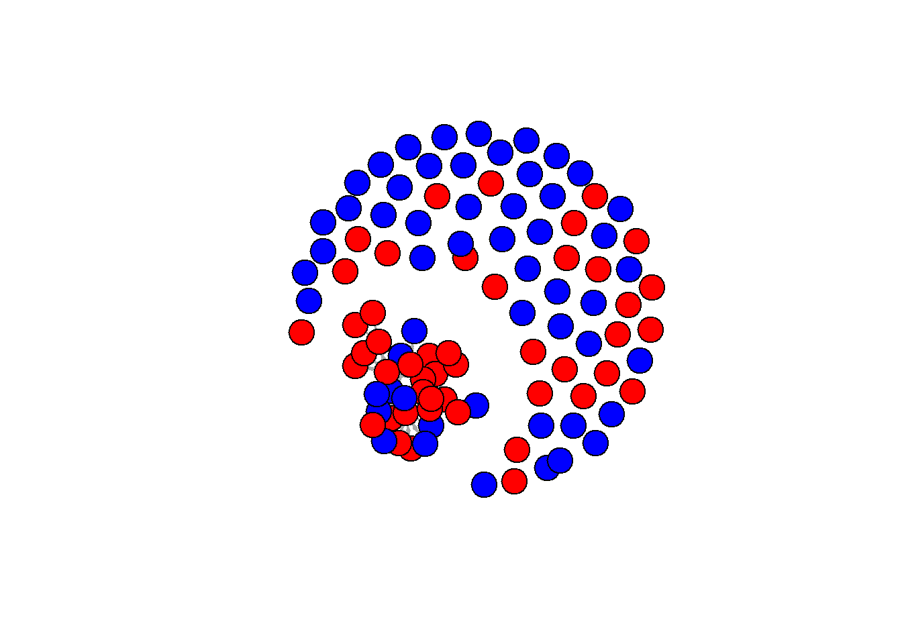

Meeting with Jochem
look at publications website (sunbelt workshop)
rm(list = ls())require(tidyverse)
require(RSiena)
require(RsienaTwoStep)
# install.packages('data.table')
require(data.table) # mainly for faster data handling
# install.packages('xml2')
require(xml2)
# install.packages('rvest')
require(rvest)
require(igraph)
require(ggraph)
# install.packages('visNetwork')
require(visNetwork)
# install.packages('threejs')
require(threejs)
# install.packages('networkD3')
require(networkD3)fpackage.check <- function(packages) {
lapply(packages, FUN = function(x) {
if (!require(x, character.only = TRUE)) {
install.packages(x, dependencies = TRUE)
library(x, character.only = TRUE)
}
})
}
fsave <- function(x, file = NULL, location = "./data/processed/") {
ifelse(!dir.exists("data"), dir.create("data"), FALSE)
ifelse(!dir.exists("data/processed"), dir.create("data/processed"), FALSE)
if (is.null(file))
file = deparse(substitute(x))
datename <- substr(gsub("[:-]", "", Sys.time()), 1, 8)
totalname <- paste(location, file, "_", datename, ".rda", sep = "")
save(x, file = totalname) #need to fix if file is reloaded as input name, not as x.
}
fload <- function(filename) {
load(filename)
get(ls()[ls() != "filename"])
}
fshowdf <- function(x, ...) {
knitr::kable(x, digits = 2, "html", ...) %>%
kableExtra::kable_styling(bootstrap_options = c("striped", "hover")) %>%
kableExtra::scroll_box(width = "100%", height = "300px")
}
# this is the most important one. We created it in the previous script
f_pubnets <- function(df_scholars = df, list_publications = publications, discip = "sociology" + "political science",
affiliation = "RU", waves = list(wave1 = c(2018, 2019, 2020), wave2 = c(2021, 2022, 2023))) {
publications <- list_publications %>%
bind_rows() %>%
distinct(title, .keep_all = TRUE)
df_scholars %>%
filter(affil1 == affiliation | affil2 == affiliation) %>%
filter(discipline == discip) -> df_sel
networklist <- list()
for (wave in 1:length(waves)) {
networklist[[wave]] <- matrix(0, nrow = nrow(df_sel), ncol = nrow(df_sel))
}
publicationlist <- list()
for (wave in 1:length(waves)) {
publicationlist[[wave]] <- publications %>%
filter(gs_id %in% df_sel$gs_id) %>%
filter(year %in% waves[[wave]]) %>%
select(author) %>%
lapply(str_split, pattern = ",")
}
publicationlist2 <- list()
for (wave in 1:length(waves)) {
publicationlist2[[wave]] <- publicationlist[[wave]]$author %>%
# lowercase
lapply(tolower) %>%
# Removing diacritics
lapply(stri_trans_general, id = "latin-ascii") %>%
# only last name
lapply(word, start = -1, sep = " ") %>%
# only last last name
lapply(word, start = -1, sep = "-")
}
for (wave in 1:length(waves)) {
# let us remove all publications with only one author
remove <- which(sapply(publicationlist2[[wave]], FUN = function(x) length(x) == 1) == TRUE)
publicationlist2[[wave]] <- publicationlist2[[wave]][-remove]
}
for (wave in 1:length(waves)) {
pubs <- publicationlist2[[wave]]
for (ego in 1:nrow(df_sel)) {
# which ego?
lastname_ego <- df_sel$lastname[ego]
# for all publications
for (pub in 1:length(pubs)) {
# only continue if ego is author of pub
if (lastname_ego %in% pubs[[pub]]) {
aut_pot <- which.max(pubs[[pub]] %in% lastname_ego)
# only continue if ego is first author of pub
if (aut_pot == 1) {
# check all alters/co-authors
for (alter in 1:nrow(df_sel)) {
# which alter
lastname_alter <- df_sel$lastname[alter]
if (lastname_alter %in% pubs[[pub]]) {
networklist[[wave]][ego, alter] <- networklist[[wave]][ego, alter] + 1
}
}
}
}
}
}
}
return(list(df = df_sel, network = networklist))
}fcolnet <- function(data = scholars, university = "RU", discipline = "sociology" + "political science",
waves = list(c(2015, 2018), c(2019, 2023)), type = c("first")) {
# step 1
demographics <- do.call(rbind.data.frame, data$demographics)
demographics <- demographics %>%
mutate(Universiteit1.22 = replace(Universiteit1.22, is.na(Universiteit1.22), ""), Universiteit2.22 = replace(Universiteit2.22,
is.na(Universiteit2.22), ""), Universiteit1.24 = replace(Universiteit1.24, is.na(Universiteit1.24),
""), Universiteit2.24 = replace(Universiteit2.24, is.na(Universiteit2.24), ""), discipline.22 = replace(discipline.22,
is.na(discipline.22), ""), discipline.24 = replace(discipline.24, is.na(discipline.24), ""))
sample <- which((demographics$Universiteit1.22 %in% university | demographics$Universiteit2.22 %in%
university | demographics$Universiteit1.24 %in% university | demographics$Universiteit2.24 %in%
university) & (demographics$discipline.22 %in% discipline | demographics$discipline.24 %in% discipline))
demographics_soc <- demographics[sample, ]
scholars_sel <- lapply(scholars, "[", sample)
# step 2
ids <- demographics_soc$au_id
nwaves <- length(waves)
nets <- array(0, dim = c(nwaves, length(ids), length(ids)), dimnames = list(wave = 1:nwaves, ids,
ids))
dimnames(nets)
# step 3
df_works <- tibble(works_id = unlist(lapply(scholars_sel$work, function(l) l$id)), works_author = unlist(lapply(scholars_sel$work,
function(l) l$author), recursive = FALSE), works_year = unlist(lapply(scholars_sel$work, function(l) l$publication_year),
recursive = FALSE))
df_works <- df_works[!duplicated(df_works), ]
# step 4
if (type == "first") {
for (j in 1:nwaves) {
df_works_w <- df_works[df_works$works_year >= waves[[j]][1] & df_works$works_year <= waves[[j]][2],
]
for (i in 1:nrow(df_works_w)) {
ego <- df_works_w$works_author[i][[1]]$au_id[1]
alters <- df_works_w$works_author[i][[1]]$au_id[-1]
if (sum(ids %in% ego) > 0 & sum(ids %in% alters) > 0) {
nets[j, which(ids %in% ego), which(ids %in% alters)] <- 1
}
}
}
}
if (type == "last") {
for (j in 1:nwaves) {
df_works_w <- df_works[df_works$works_year >= waves[[j]][1] & df_works$works_year <= waves[[j]][2],
]
for (i in 1:nrow(df_works_w)) {
ego <- rev(df_works_w$works_author[i][[1]]$au_id)[1]
alters <- rev(df_works_w$works_author[i][[1]]$au_id)[-1]
if (sum(ids %in% ego) > 0 & sum(ids %in% alters) > 0) {
nets[j, which(ids %in% ego), which(ids %in% alters)] <- 1
}
}
}
}
if (type == "all") {
for (j in 1:nwaves) {
df_works_w <- df_works[df_works$works_year >= waves[[j]][1] & df_works$works_year <= waves[[j]][2],
]
for (i in 1:nrow(df_works_w)) {
egos <- df_works_w$works_author[i][[1]]$au_id
if (sum(ids %in% egos) > 0) {
nets[j, which(ids %in% egos), which(ids %in% egos)] <- 1
}
}
}
}
output <- list()
output$data <- scholars_sel
output$nets <- nets
return(output)
}scholars <- fload("./data/processed/scholars_20240924.rda") #make sure to lead fload first ofcourse# save the output of your function
test <- fcolnet(data = scholars, university = "RU", discipline = c("sociology", "political science"),
waves = list(c(2015, 2018), c(2019, 2023)), type = c("all")) # all, first, last # which ties in there
# USE not all but first or last so the ties are directed from 'perspective' of first author of the
# publications usually first most prestige#inspecting scholars_20240924.rda object
#df_ego <- do.call(rbind.data.frame, scholars$demographics)
#unique(df_ego$discipline.22)
# save the output of your function
testsoc <- fcolnet(data = scholars,
university = "RU",
discipline = "sociology",
waves = list(c(2015, 2018), c(2019, 2023)),
type = c("first"))
# I DONT KNOW HOW TO MAKE ALL SCHOLARS BE PART OF SAME FUNCTION ("sociology"+ "political science" does not work...)
testpolsci <- fcolnet(data = scholars,
university = "RU",
discipline = "political science",
waves = list(c(2015, 2018), c(2019, 2023)),
type = c("first"))soc_nets <- testsoc$nets
df_ego_demo <- testsoc$data$demographics
df_ego_oa <- testsoc$data$scholars_oa
df_ego_works <- testsoc$data$works
# DEMO
str(df_ego_demo, 1)#> List of 50
#> $ 22 : tibble [1 × 21] (S3: tbl_df/tbl/data.frame)
#> $ 49 : tibble [1 × 21] (S3: tbl_df/tbl/data.frame)
#> $ 50 : tibble [1 × 21] (S3: tbl_df/tbl/data.frame)
#> $ 51 : tibble [1 × 21] (S3: tbl_df/tbl/data.frame)
#> $ 52 : tibble [1 × 21] (S3: tbl_df/tbl/data.frame)
#> $ 53 : tibble [1 × 21] (S3: tbl_df/tbl/data.frame)
#> $ 54 : tibble [1 × 21] (S3: tbl_df/tbl/data.frame)
#> $ 55 : tibble [1 × 21] (S3: tbl_df/tbl/data.frame)
#> $ 56 : tibble [1 × 21] (S3: tbl_df/tbl/data.frame)
#> $ 57 : tibble [1 × 21] (S3: tbl_df/tbl/data.frame)
#> $ 58 : tibble [1 × 21] (S3: tbl_df/tbl/data.frame)
#> $ 59 : tibble [1 × 21] (S3: tbl_df/tbl/data.frame)
#> $ 60 : tibble [1 × 21] (S3: tbl_df/tbl/data.frame)
#> $ 61 : tibble [1 × 21] (S3: tbl_df/tbl/data.frame)
#> $ 62 : tibble [1 × 21] (S3: tbl_df/tbl/data.frame)
#> $ 63 : tibble [1 × 21] (S3: tbl_df/tbl/data.frame)
#> $ 64 : tibble [1 × 21] (S3: tbl_df/tbl/data.frame)
#> $ 65 : tibble [1 × 21] (S3: tbl_df/tbl/data.frame)
#> $ 66 : tibble [1 × 21] (S3: tbl_df/tbl/data.frame)
#> $ 67 : tibble [1 × 21] (S3: tbl_df/tbl/data.frame)
#> $ 68 : tibble [1 × 21] (S3: tbl_df/tbl/data.frame)
#> $ 69 : tibble [1 × 21] (S3: tbl_df/tbl/data.frame)
#> $ 70 : tibble [1 × 21] (S3: tbl_df/tbl/data.frame)
#> $ 71 : tibble [1 × 21] (S3: tbl_df/tbl/data.frame)
#> $ 72 : tibble [1 × 21] (S3: tbl_df/tbl/data.frame)
#> $ 73 : tibble [1 × 21] (S3: tbl_df/tbl/data.frame)
#> $ 74 : tibble [1 × 21] (S3: tbl_df/tbl/data.frame)
#> $ 75 : tibble [1 × 21] (S3: tbl_df/tbl/data.frame)
#> $ 76 : tibble [1 × 21] (S3: tbl_df/tbl/data.frame)
#> $ 77 : tibble [1 × 21] (S3: tbl_df/tbl/data.frame)
#> $ 78 : tibble [1 × 21] (S3: tbl_df/tbl/data.frame)
#> $ 79 : tibble [1 × 21] (S3: tbl_df/tbl/data.frame)
#> $ 80 : tibble [1 × 21] (S3: tbl_df/tbl/data.frame)
#> $ 81 : tibble [1 × 21] (S3: tbl_df/tbl/data.frame)
#> $ 82 : tibble [1 × 21] (S3: tbl_df/tbl/data.frame)
#> $ 83 : tibble [1 × 21] (S3: tbl_df/tbl/data.frame)
#> $ 84 : tibble [1 × 21] (S3: tbl_df/tbl/data.frame)
#> $ 85 : tibble [1 × 21] (S3: tbl_df/tbl/data.frame)
#> $ 86 : tibble [1 × 21] (S3: tbl_df/tbl/data.frame)
#> $ 87 : tibble [1 × 21] (S3: tbl_df/tbl/data.frame)
#> $ 88 : tibble [1 × 21] (S3: tbl_df/tbl/data.frame)
#> $ 89 : tibble [1 × 21] (S3: tbl_df/tbl/data.frame)
#> $ 90 : tibble [1 × 21] (S3: tbl_df/tbl/data.frame)
#> $ 91 : tibble [1 × 21] (S3: tbl_df/tbl/data.frame)
#> $ 92 : tibble [1 × 21] (S3: tbl_df/tbl/data.frame)
#> $ 129: tibble [1 × 21] (S3: tbl_df/tbl/data.frame)
#> $ 618: tibble [1 × 21] (S3: tbl_df/tbl/data.frame)
#> $ 619: tibble [1 × 21] (S3: tbl_df/tbl/data.frame)
#> $ 620: tibble [1 × 21] (S3: tbl_df/tbl/data.frame)
#> $ 621: tibble [1 × 21] (S3: tbl_df/tbl/data.frame)df_ego_demo <- do.call(rbind.data.frame, df_ego_demo)
df_ego_demo[[1]]#> [1] "Ana Macanovic" "Ronald Batenburg" "Katia Begall"
#> [4] "Hidde Bekhuis" "Lonneke van den Berg" "Lieselotte Blommaert"
#> [7] "Rob Eisinga" "Maurice Gesthuizen" "Nella Geurts"
#> [10] "Saskia Glas" "Margriet van Hek" "Remco Hoekman"
#> [13] "Bas Hofstra" "Judith Koops" "Gerbert Kraaykamp"
#> [16] "Roza Meuleman" "Michael Savelkoul" "Peer Scheepers"
#> [19] "Niels Spierings" "Jochem Tolsma" "Ellen Verbakel"
#> [22] "Mark Visser" "Maarten Wolbers" "Carlijn Bussemakers"
#> [25] "Rob Franken" "Mustafa Firat" "Inge Hendriks"
#> [28] "Thijmen Jeroense" "Rachel Kollar" "Nik Linders"
#> [31] "Renae Loh" "Maikel Meijeren" "Carly van Mensvoort"
#> [34] "Anne Maaike Mulders" "Katrin Müller" "Klara Raiber"
#> [37] "Marlou Ramaekers" "Sara Wiertsema" "Janos Betko"
#> [40] "Jansje van Middendorp" "Elize Vis" "Tijmen Weber"
#> [43] "Carl Sterkens" "Paul Vermeer" "Malou Grubben"
#> [46] "Marcel Lubbers" "Annick van Brouwershaven" "Lex Thijssen"
#> [49] "Renate Wit" "Samira Azabar"# OA str(df_ego_oa, 1)
df_ego_oa[[1]]#> # A tibble: 1 × 18
#> id display_name display_name_alterna…¹ relevance_score ids orcid works_count cited_by_count
#> <chr> <chr> <list> <dbl> <lis> <chr> <int> <int>
#> 1 https:… Ana Macanov… <chr [1]> 1498. <chr> http… 9 70
#> # ℹ abbreviated name: ¹display_name_alternatives
#> # ℹ 10 more variables: counts_by_year <list>, affiliation_display_name <chr>, affiliation_id <chr>,
#> # affiliation_ror <chr>, affiliation_country_code <chr>, affiliation_type <chr>,
#> # affiliation_lineage <chr>, affiliations_other <list>, x_concepts <list>, works_api_url <chr>df_ego_oa <- do.call(rbind.data.frame, df_ego_oa)
# --> EGO DATAFRAME with demo and oa (sociology)
`?`(join.data.frame)
df_soc_ego <- left_join(df_ego_demo, df_ego_oa, by = join_by(au_id == id))
rownames(soc_nets[1, , ]) == df_soc_ego$au_id # checking if the author id's are the same as in df_ego in nets dataframe #> [1] TRUE TRUE TRUE TRUE TRUE TRUE TRUE TRUE TRUE TRUE TRUE TRUE TRUE TRUE TRUE TRUE TRUE TRUE TRUE
#> [20] TRUE TRUE TRUE TRUE TRUE TRUE TRUE TRUE TRUE TRUE TRUE TRUE TRUE TRUE TRUE TRUE TRUE TRUE TRUE
#> [39] TRUE TRUE TRUE TRUE TRUE TRUE TRUE TRUE TRUE TRUE TRUE TRUE# --> yes, the correct ones!!!
df_ego_works[[1]]$author#> [[1]]
#> au_id au_display_name au_orcid
#> 1 https://openalex.org/A5022704573 Étienne Ollion https://orcid.org/0000-0003-3099-5240
#> 2 https://openalex.org/A5077634022 Rubing Shen https://orcid.org/0000-0002-5504-6108
#> 3 https://openalex.org/A5011326378 Ana Macanovic https://orcid.org/0000-0003-0800-5271
#> 4 https://openalex.org/A5005519980 Arnault Chatelain https://orcid.org/0009-0002-6450-2176
#> author_position is_corresponding
#> 1 first TRUE
#> 2 middle FALSE
#> 3 middle FALSE
#> 4 last FALSE
#> au_affiliation_raw
#> 1 Centre de Recherche en Économie et de Statistiques (CREST), CNRS, École polytechnique, GENES, ENSAE Paris, Institut Polytechnique de Paris, Palaiseau, France
#> 2 Centre de Recherche en Économie et de Statistiques (CREST), CNRS, École polytechnique, GENES, ENSAE Paris, Institut Polytechnique de Paris, Palaiseau, France
#> 3 Department of Sociology, Utrecht University/ICS, Utrecht, The Netherlands
#> 4 Centre de Recherche en Économie et de Statistiques (CREST), CNRS, École polytechnique, GENES, ENSAE Paris, Institut Polytechnique de Paris, Palaiseau, France
#> institution_id
#> 1 https://openalex.org/I1294671590
#> 2 https://openalex.org/I142476485
#> 3 https://openalex.org/I193662353
#> 4 https://openalex.org/I84009706
#> institution_display_name institution_ror
#> 1 Centre National de la Recherche Scientifique https://ror.org/02feahw73
#> 2 École Polytechnique https://ror.org/05hy3tk52
#> 3 Utrecht University https://ror.org/04pp8hn57
#> 4 École Nationale de la Statistique et de l'Administration Économique https://ror.org/01fz7mn40
#> institution_country_code institution_type
#> 1 FR government
#> 2 FR education
#> 3 NL education
#> 4 FR education
#> institution_lineage
#> 1 https://openalex.org/I1294671590
#> 2 https://openalex.org/I142476485, https://openalex.org/I4210145102
#> 3 https://openalex.org/I193662353
#> 4 https://openalex.org/I4210108488, https://openalex.org/I84009706
#>
#> [[2]]
#> au_id au_display_name au_orcid
#> 1 https://openalex.org/A5011326378 Ana Macanovic https://orcid.org/0000-0003-0800-5271
#> author_position is_corresponding
#> 1 first TRUE
#> au_affiliation_raw
#> 1 Utrecht University, Department of Sociology / ICS, Padualaan 14, 3584 CH, Utrecht, The Netherlands
#> institution_id institution_display_name institution_ror
#> 1 https://openalex.org/I193662353 Utrecht University https://ror.org/04pp8hn57
#> institution_country_code institution_type institution_lineage
#> 1 NL education https://openalex.org/I193662353
#>
#> [[3]]
#> au_id au_display_name au_orcid
#> 1 https://openalex.org/A5011326378 Ana Macanovic https://orcid.org/0000-0003-0800-5271
#> 2 https://openalex.org/A5069791094 Milena Tsvetkova https://orcid.org/0000-0002-3552-108X
#> 3 https://openalex.org/A5042566717 Wojtek Przepiorka https://orcid.org/0000-0001-9432-8696
#> 4 https://openalex.org/A5060904065 Vincent Buskens https://orcid.org/0000-0002-4483-7238
#> author_position is_corresponding
#> 1 first TRUE
#> 2 middle FALSE
#> 3 middle TRUE
#> 4 last FALSE
#> au_affiliation_raw
#> 1 Centre for Complex Systems Studies, Utrecht University, Utrecht, The Netherlands
#> 2 Department of Methodology, London School of Economics and Political Science, London, WC2A 2AE, UK
#> 3 Department of Sociology/ICS, Utrecht University, Utrecht, The Netherlands
#> 4 Centre for Complex Systems Studies, Utrecht University, Utrecht, The Netherlands
#> institution_id institution_display_name
#> 1 https://openalex.org/I193662353 Utrecht University
#> 2 https://openalex.org/I909854389 London School of Economics and Political Science
#> 3 https://openalex.org/I193662353 Utrecht University
#> 4 https://openalex.org/I173063890 University of Applied Sciences Utrecht
#> institution_ror institution_country_code institution_type
#> 1 https://ror.org/04pp8hn57 NL education
#> 2 https://ror.org/0090zs177 GB education
#> 3 https://ror.org/04pp8hn57 NL education
#> 4 https://ror.org/028z9kw20 NL education
#> institution_lineage
#> 1 https://openalex.org/I193662353
#> 2 https://openalex.org/I124357947, https://openalex.org/I909854389
#> 3 https://openalex.org/I193662353
#> 4 https://openalex.org/I173063890
#>
#> [[4]]
#> au_id au_display_name au_orcid
#> 1 https://openalex.org/A5022704573 Étienne Ollion https://orcid.org/0000-0003-3099-5240
#> 2 https://openalex.org/A5077634022 Rubing Shen https://orcid.org/0000-0002-5504-6108
#> 3 https://openalex.org/A5011326378 Ana Macanovic https://orcid.org/0000-0003-0800-5271
#> 4 https://openalex.org/A5005519980 Arnault Chatelain https://orcid.org/0009-0002-6450-2176
#> author_position is_corresponding au_affiliation_raw institution_id institution_display_name
#> 1 first FALSE <NA> NA NA
#> 2 middle FALSE <NA> NA NA
#> 3 middle FALSE <NA> NA NA
#> 4 last FALSE <NA> NA NA
#> institution_ror institution_country_code institution_type institution_lineage
#> 1 NA NA NA NA
#> 2 NA NA NA NA
#> 3 NA NA NA NA
#> 4 NA NA NA NA
#>
#> [[5]]
#> au_id au_display_name au_orcid
#> 1 https://openalex.org/A5011326378 Ana Macanovic https://orcid.org/0000-0003-0800-5271
#> 2 https://openalex.org/A5042566717 Wojtek Przepiorka https://orcid.org/0000-0001-9432-8696
#> author_position is_corresponding
#> 1 first FALSE
#> 2 last FALSE
#> au_affiliation_raw
#> 1 Department of Sociology/ICS, Utrecht University , Utrecht, The Netherlands
#> 2 Department of Sociology/ICS, Utrecht University , Utrecht, The Netherlands
#> institution_id institution_display_name institution_ror
#> 1 https://openalex.org/I193662353 Utrecht University https://ror.org/04pp8hn57
#> 2 https://openalex.org/I193662353 Utrecht University https://ror.org/04pp8hn57
#> institution_country_code institution_type institution_lineage
#> 1 NL education https://openalex.org/I193662353
#> 2 NL education https://openalex.org/I193662353
#>
#> [[6]]
#> au_id au_display_name au_orcid
#> 1 https://openalex.org/A5011326378 Ana Macanovic https://orcid.org/0000-0003-0800-5271
#> 2 https://openalex.org/A5042566717 Wojtek Przepiorka https://orcid.org/0000-0001-9432-8696
#> author_position is_corresponding
#> 1 first FALSE
#> 2 last FALSE
#> au_affiliation_raw
#> 1 Department of Sociology/ICS, Utrecht University, Utrecht, The Netherlands
#> 2 Department of Sociology/ICS, Utrecht University, Utrecht, The Netherlands
#> institution_id institution_display_name institution_ror
#> 1 https://openalex.org/I193662353 Utrecht University https://ror.org/04pp8hn57
#> 2 https://openalex.org/I193662353 Utrecht University https://ror.org/04pp8hn57
#> institution_country_code institution_type institution_lineage
#> 1 NL education https://openalex.org/I193662353
#> 2 NL education https://openalex.org/I193662353
#>
#> [[7]]
#> au_id au_display_name au_orcid
#> 1 https://openalex.org/A5011326378 Ana Macanovic https://orcid.org/0000-0003-0800-5271
#> 2 https://openalex.org/A5069791094 Milena Tsvetkova https://orcid.org/0000-0002-3552-108X
#> 3 https://openalex.org/A5042566717 Wojtek Przepiorka https://orcid.org/0000-0001-9432-8696
#> 4 https://openalex.org/A5060904065 Vincent Buskens https://orcid.org/0000-0002-4483-7238
#> author_position is_corresponding
#> 1 first FALSE
#> 2 middle FALSE
#> 3 middle FALSE
#> 4 last FALSE
#> au_affiliation_raw
#> 1 Centre for Complex Systems Studies, Utrecht University, Utrecht, The Netherlands
#> 2 Department of Methodology, London School of Economics and Political Science, London, United Kingdom
#> 3 Department of Sociology / ICS, Utrecht University, Utrecht, The Netherlands
#> 4 Centre for Complex Systems Studies, Utrecht University, Utrecht, The Netherlands
#> institution_id institution_display_name
#> 1 https://openalex.org/I173063890 University of Applied Sciences Utrecht
#> 2 https://openalex.org/I909854389 London School of Economics and Political Science
#> 3 https://openalex.org/I193662353 Utrecht University
#> 4 https://openalex.org/I173063890 University of Applied Sciences Utrecht
#> institution_ror institution_country_code institution_type
#> 1 https://ror.org/028z9kw20 NL education
#> 2 https://ror.org/0090zs177 GB education
#> 3 https://ror.org/04pp8hn57 NL education
#> 4 https://ror.org/028z9kw20 NL education
#> institution_lineage
#> 1 https://openalex.org/I173063890
#> 2 https://openalex.org/I124357947, https://openalex.org/I909854389
#> 3 https://openalex.org/I193662353
#> 4 https://openalex.org/I173063890
#>
#> [[8]]
#> au_id au_display_name au_orcid
#> 1 https://openalex.org/A5011326378 Ana Macanovic https://orcid.org/0000-0003-0800-5271
#> author_position is_corresponding au_affiliation_raw institution_id institution_display_name
#> 1 first TRUE <NA> NA NA
#> institution_ror institution_country_code institution_type institution_lineage
#> 1 NA NA NA NA
#>
#> [[9]]
#> au_id au_display_name au_orcid
#> 1 https://openalex.org/A5011326378 Ana Macanovic https://orcid.org/0000-0003-0800-5271
#> 2 https://openalex.org/A5042566717 Wojtek Przepiorka https://orcid.org/0000-0001-9432-8696
#> author_position is_corresponding au_affiliation_raw
#> 1 first TRUE Utrecht University, Department of Sociology / ICS
#> 2 last FALSE Utrecht University, Department of Sociology / ICS
#> institution_id institution_display_name institution_ror
#> 1 https://openalex.org/I193662353 Utrecht University https://ror.org/04pp8hn57
#> 2 https://openalex.org/I193662353 Utrecht University https://ror.org/04pp8hn57
#> institution_country_code institution_type institution_lineage
#> 1 NL education https://openalex.org/I193662353
#> 2 NL education https://openalex.org/I193662353# authors of all the works that first scholar (here: Ana Macanovic) is part of# dependent pol_net <- sienaDependent(net_pol_array)
# dependent
pol_nets <- testpolsci$nets
df_pol_ego_demo <- testpolsci$data$demographics
df_pol_ego_oa <- testpolsci$data$scholars_oa
df_pol_ego_works <- testpolsci$data$works
# DEMO str(df_pol_ego_demo, 1)
df_pol_ego_demo <- do.call(rbind.data.frame, df_pol_ego_demo)
df_pol_ego_demo[[1]]#> [1] "Daniel DeRock" "Yaël van Drunen" "Teun Eikenaar"
#> [4] "Erika van Elsas" "Naomi Gilhuis" "Emily Gravesteijn"
#> [7] "Gijs Hablous" "Carolien van Ham" "Kristof Jacobs"
#> [10] "Jutta Joachim" "Gerry van der Kamp-Alons" "Gaard Kets"
#> [13] "Rosa Kindt" "Marijn Knieriem" "Bart van Leeuwen"
#> [16] "Mathijs van Leeuwen" "Alex Lehr" "Charlie Loopuijt"
#> [19] "Sofie van der Maarel" "Romain Malejacq" "Katerina Manevska"
#> [22] "Gustav Meibauer" "Maurits Meijers" "Tine Molendijk"
#> [25] "Camille Munezero" "Chris Nijhuis" "Bob Reinalda"
#> [28] "Roderik Rekker" "Saskia Ruth-Lovell" "Indra Römgens"
#> [31] "Melisa Soto" "Nora Stel" "Haley Swedlund"
#> [34] "Tjidde Tempels" "Niels Terpstra" "Marie Theuwis"
#> [37] "Maya Turolla" "Reinout van der Veer" "Bertjan Verbeek"
#> [40] "Willemijn Verkoren" "Mieke Verloo" "Désirée Verweij"
#> [43] "Anna van der Vleuten" "Koen Vossen" "Angela Wigger"
#> [46] "Marcel Wissenburg" "Andrej Zaslove" "Michal Mochtak"
#> [49] "Puck Overhaart" "Guangyu Qiao-Franco" "Sanne Weber"# OA str(df_pol_ego_oa, 1)
df_pol_ego_oa[[1]]#> # A tibble: 1 × 18
#> id display_name display_name_alterna…¹ relevance_score ids orcid works_count cited_by_count
#> <chr> <chr> <list> <dbl> <lis> <chr> <int> <int>
#> 1 https:… Daniel DeRo… <chr [1]> 1039. <chr> http… 4 28
#> # ℹ abbreviated name: ¹display_name_alternatives
#> # ℹ 10 more variables: counts_by_year <list>, affiliation_display_name <chr>, affiliation_id <chr>,
#> # affiliation_ror <chr>, affiliation_country_code <chr>, affiliation_type <chr>,
#> # affiliation_lineage <chr>, affiliations_other <list>, x_concepts <list>, works_api_url <chr>df_pol_ego_oa <- do.call(rbind.data.frame, df_pol_ego_oa)
# --> EGO DATAFRAME with demo and oa (political science)
df_pol_ego <- left_join(df_pol_ego_demo, df_pol_ego_oa, by = join_by(au_id == id))
rownames(pol_nets[1, , ]) == df_pol_ego$au_id # checking if the author id's are the same as in df_ego in nets dataframe #> [1] TRUE TRUE TRUE TRUE TRUE TRUE TRUE TRUE TRUE TRUE TRUE TRUE TRUE TRUE TRUE TRUE TRUE TRUE TRUE
#> [20] TRUE TRUE TRUE TRUE TRUE TRUE TRUE TRUE TRUE TRUE TRUE TRUE TRUE TRUE TRUE TRUE TRUE TRUE TRUE
#> [39] TRUE TRUE TRUE TRUE TRUE TRUE TRUE TRUE TRUE TRUE TRUE TRUE TRUE# --> yes, the correct ones!!!df_soc_ego$Naam # list of all names in sociology department #> [1] "Ana Macanovic" "Ronald Batenburg" "Katia Begall"
#> [4] "Hidde Bekhuis" "Lonneke van den Berg" "Lieselotte Blommaert"
#> [7] "Rob Eisinga" "Maurice Gesthuizen" "Nella Geurts"
#> [10] "Saskia Glas" "Margriet van Hek" "Remco Hoekman"
#> [13] "Bas Hofstra" "Judith Koops" "Gerbert Kraaykamp"
#> [16] "Roza Meuleman" "Michael Savelkoul" "Peer Scheepers"
#> [19] "Niels Spierings" "Jochem Tolsma" "Ellen Verbakel"
#> [22] "Mark Visser" "Maarten Wolbers" "Carlijn Bussemakers"
#> [25] "Rob Franken" "Mustafa Firat" "Inge Hendriks"
#> [28] "Thijmen Jeroense" "Rachel Kollar" "Nik Linders"
#> [31] "Renae Loh" "Maikel Meijeren" "Carly van Mensvoort"
#> [34] "Anne Maaike Mulders" "Katrin Müller" "Klara Raiber"
#> [37] "Marlou Ramaekers" "Sara Wiertsema" "Janos Betko"
#> [40] "Jansje van Middendorp" "Elize Vis" "Tijmen Weber"
#> [43] "Carl Sterkens" "Paul Vermeer" "Malou Grubben"
#> [46] "Marcel Lubbers" "Annick van Brouwershaven" "Lex Thijssen"
#> [49] "Renate Wit" "Samira Azabar"df_soc_ego$gender <- c(0, 1, 0, 1, 0, 0, 1, 1, 0, 0, 0, 1, 1, 0, 1, 0, 1, 1, 1, 1, 0, 1, 1, 0, 1, 1,
0, 1, 0, 1, 0, 1, 0, 0, 0, 0, 0, 0, 1, 0, 0, 1, 1, 1, 0, 1, 0, 1, 0, 0)
# manually filled in gender 0 = woman, 1 = man, based on majority given in NL voornamen bank
# check if it went smoothly view(df_soc_ego[c('Naam', 'gender', 'au_id')])
# fsave(df_soc_ego)df_pol_ego$Naam # list of all names #> [1] "Daniel DeRock" "Yaël van Drunen" "Teun Eikenaar"
#> [4] "Erika van Elsas" "Naomi Gilhuis" "Emily Gravesteijn"
#> [7] "Gijs Hablous" "Carolien van Ham" "Kristof Jacobs"
#> [10] "Jutta Joachim" "Gerry van der Kamp-Alons" "Gaard Kets"
#> [13] "Rosa Kindt" "Marijn Knieriem" "Bart van Leeuwen"
#> [16] "Mathijs van Leeuwen" "Alex Lehr" "Charlie Loopuijt"
#> [19] "Sofie van der Maarel" "Romain Malejacq" "Katerina Manevska"
#> [22] "Gustav Meibauer" "Maurits Meijers" "Tine Molendijk"
#> [25] "Camille Munezero" "Chris Nijhuis" "Bob Reinalda"
#> [28] "Roderik Rekker" "Saskia Ruth-Lovell" "Indra Römgens"
#> [31] "Melisa Soto" "Nora Stel" "Haley Swedlund"
#> [34] "Tjidde Tempels" "Niels Terpstra" "Marie Theuwis"
#> [37] "Maya Turolla" "Reinout van der Veer" "Bertjan Verbeek"
#> [40] "Willemijn Verkoren" "Mieke Verloo" "Désirée Verweij"
#> [43] "Anna van der Vleuten" "Koen Vossen" "Angela Wigger"
#> [46] "Marcel Wissenburg" "Andrej Zaslove" "Michal Mochtak"
#> [49] "Puck Overhaart" "Guangyu Qiao-Franco" "Sanne Weber"df_pol_ego$gender <- c(1, 0, 1, 0, 0, 0, 1, 0, 1, 0, 1, 1, 0, 0, 1, 1, 1, 0, 0, 1, 0, 1, 1, 0, 0, 1,
1, 1, 0, 0, 0, 0, 0, 1, 1, 0, 0, 1, 1, 0, 0, 0, 0, 1, 0, 1, 1, 1, 0, 0, 0)
# manually filled in gender 0 = woman, 1 = man, based on majority given in NL voornamen bank,
# Guangyu was not in name bank but based on the employee-picture of RU, this person presents
# feminine, thus I assumed 0.
# check if it went smoothly view(df_pol_ego[c('Naam', 'gender', 'au_id')])
# covariate gender <- coCovar(df_ego$gender)
# fsave(df_pol_ego)soc_gender <- fload("./data/processed/df_soc_ego_20241105.rda")
pol_gender <- fload("./data/processed/df_pol_ego_20241105.rda")df <- test$data # make dataset with all data
df_ego <- do.call(rbind.data.frame, df$demographics) # data set with demographic information
soc_gender <- soc_gender[, c("Naam", "gender")] # selecting only the content we need
pol_gender <- pol_gender[, c("Naam", "gender")] # selecting only the content we need
gender <- rbind(soc_gender, pol_gender) # combining the gender data sets
df_ego <- df_ego %>%
left_join(gender) #dcombining data set of gender with the one with demographic information Credits to Lucan Bovens for the code.
# Add h-index and i10-index columns to df_ego
df_ego <- df_ego %>%
mutate(h_index = NA_real_, i10_index = NA_real_)
# Get H-index and i10-index
get_openalex_metrics <- function(openalex_id) {
url <- paste0("https://api.openalex.org/authors/", openalex_id)
author_data <- tryCatch({
jsonlite::fromJSON(url)
}, error = function(e) {
message(paste("Error fetching data for OpenAlex ID:", openalex_id))
return(NULL)
})
if (!is.null(author_data)) {
h_index <- author_data$summary_stats$h_index
i10_index <- author_data$summary_stats$i10_index
works_count <- author_data$works_count
cited_by_count <- author_data$cited_by_count
return(list(h_index = h_index, i10_index = i10_index, works_count = works_count, cited_by_count = cited_by_count))
} else {
return(list(h_index = NA, i10_index = NA, works_count = NA, cited_by_count = NA))
}
}
# Loop for each scholar
for (i in 1:nrow(df_ego)) {
openalex_id <- df_ego$au_id[i] # assuming au_id is the OpenAlex ID in df_ego
metrics <- get_openalex_metrics(openalex_id)
df_ego$h_index[i] <- metrics$h_index
df_ego$i10_index[i] <- metrics$i10_index
df_ego$works_count[i] <- metrics$works_count
df_ego$cited_by_count[i] <- metrics$cited_by_count
}
# View updated df_ego with h-index and i10-index
view(df_ego[c("au_id", "Naam", "gender", "h_index", "i10_index")])# step1 data
wave1 <- test$nets[1, , ]
wave2 <- test$nets[2, , ]
# put diagonals to zero
diag(wave1) <- 0
diag(wave2) <- 0
# we want a binary tie (not a weighted tie)
wave1[wave1 > 1] <- 1
wave2[wave2 > 1] <- 1# put the nets in an array
net_array <- array(data = c(wave1, wave2), dim = c(dim(wave1), 2))
# dependent
nets <- sienaDependent(net_array)
# put gender in object
gender <- df_ego$gender
# covariate
gender_RS <- coCovar(gender) # gender as covariate in Rsiena
# put h-index in object
h_index <- df_ego$h_index
df_ego$h_index#> [1] 5 26 12 9 4 10 27 23 5 9 10 12 11 8 42 11 11 51 25 22 23 11 26 4 11 6 3 3 3 2 3
#> [32] 2 2 2 1 4 3 2 3 1 1 2 17 15 2 37 2 2 4 9 1 0 1 17 16 13 0 2 0 1 12 18
#> [63] 6 1 1 6 8 10 12 8 1 1 15 12 10 1 3 13 11 6 6 0 2 7 16 12 29 12 15 6 13 18 21
#> [94] 1 10 3 2 7 0 5 8# covarite 2
h_index_RS <- coCovar(h_index) # h_index as covariate in RSiena
# define data
mydata <- sienaDataCreate(nets, gender_RS, h_index_RS)
# define effects structure
myeff <- getEffects(mydata)
# skipped initial description part
myeff <- includeEffects(myeff, isolateNet, inPop, outAct)#> effectName include fix test initialValue parm
#> 1 degree of alter TRUE FALSE FALSE 0 0
#> 2 degree of ego TRUE FALSE FALSE 0 0
#> 3 network-isolate TRUE FALSE FALSE 0 0myeff <- includeEffects(myeff, egoX, altX, sameX, interaction1 = "gender_RS")#> effectName include fix test initialValue parm
#> 1 gender_RS alter TRUE FALSE FALSE 0 0
#> 2 gender_RS ego TRUE FALSE FALSE 0 0
#> 3 same gender_RS TRUE FALSE FALSE 0 0# include effect of h index later too etc look up which effects to iclude
myAlgorithm <- sienaAlgorithmCreate(modelType = c(nets = 6), projname = "proProject")#> If you use this algorithm object, siena07 will create/use an output file proProject.txt .# undirected: model 6 'additive model', #check manual for this# estimate the model
model1 <- siena07(myAlgorithm, data = mydata, effects = myeff, returnDeps = TRUE)
# latter needed for GOF
model1#> Estimates, standard errors and convergence t-ratios
#>
#> Estimate Standard Convergence
#> Error t-ratio
#>
#> Rate parameters:
#> 0 Rate parameter 0.3246 ( 0.0487 )
#>
#> Other parameters:
#> 1. eval degree (density) -1.8794 ( NA ) 0.0706
#> 2. eval degree of alter 0.0598 ( NA ) 0.0451
#> 3. eval degree of ego 0.0428 ( NA ) 0.0451
#> 4. eval network-isolate 1.0983 ( NA ) -0.0590
#> 5. eval gender_RS alter -0.0855 ( NA ) 0.0117
#> 6. eval gender_RS ego -0.0855 ( NA ) 0.0117
#> 7. eval same gender_RS 0.1422 ( NA ) 0.1131
#>
#> Overall maximum convergence ratio: NA
#>
#>
#> Model Type:
#> nets : Pairwise joint model
#>
#>
#> Total of 2750 iteration steps.# output: convergence ration NA probably bc we chose all ties to be included (type = 'all') earlier
# we can go back and change that or change it here in the myAlgorithm function
# Make it a directed network focus: writing, h index, model interpretationtest_w1 <- igraph::graph_from_adjacency_matrix(
test$nets[1,,], # first wave of data.
# (thus I select the array of networks and take the first matrix)
mode = c("directed"),
weighted = NULL,
diag = FALSE,
add.colnames = NULL,
add.rownames = NULL)
plot(test_w1,
vertex.label = NA,
edge.width = 0.2,
edge.arrow.size =0.2)names(df_ego) #see labels of variables #> [1] "Naam" "Universiteit.22" "Email-adres.22" "Functie.22"
#> [5] "Google Scholar id.22" "discipline.22" "Specialisatie.22" "year.22"
#> [9] "Universiteit1.22" "Universiteit2.22" "Universiteit.24" "Email-adres.24"
#> [13] "Functie.24" "Google Scholar id.24" "discipline.24" "Specialisatie.24"
#> [17] "year.24" "Universiteit1.24" "Universiteit2.24" "no_oa_id"
#> [21] "au_id" "gender" "h_index" "i10_index"
#> [25] "works_count" "cited_by_count"plot(test_w1,
vertex.color = ifelse(df_ego$gender == 1, "red", "blue"), # now, I can use actor attributes for plotting.
# here: if gender = 1 (aka man) then red dot, if not then blue
vertex.label = NA,
edge.width = 0.2,
edge.arrow.size =0.2)
# if you dont want plot to turn, save the layout (look at SNASS)